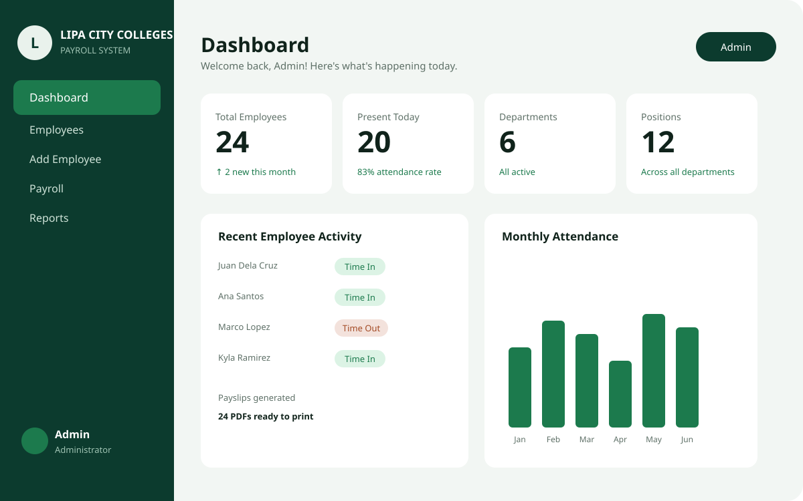
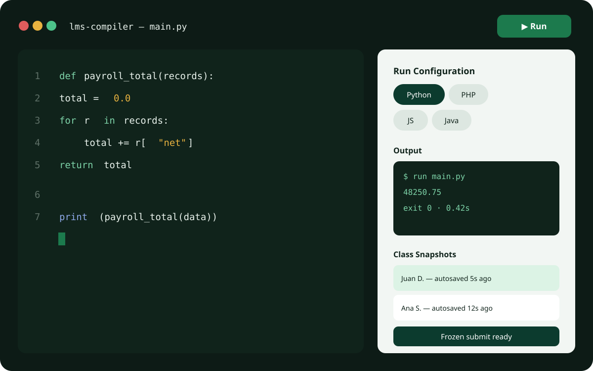
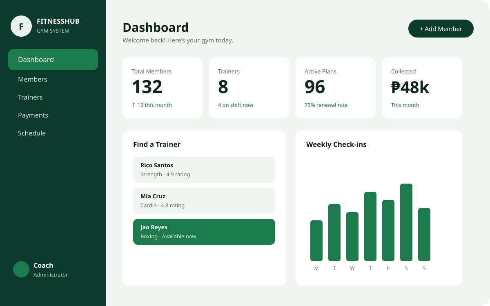
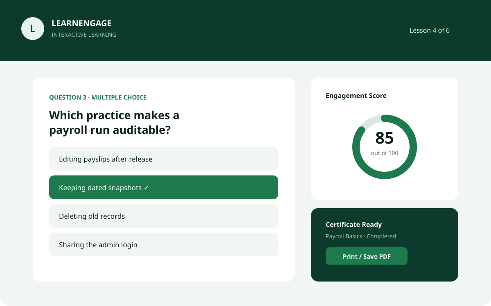

Pay-Wise
Pay-Wise: A payroll system designed to replace manual payroll processes with a centralized web application. It handles employee records, attendance, payroll processing, reports, and downloadable PDF payslips.
View on GitHub
AVAILABLE FOR PROJECTS · LIPA CITY, PH

01 — Selected work
Pay-Wise: A payroll system designed to replace manual payroll processes with a centralized web application. It handles employee records, attendance, payroll processing, reports, and downloadable PDF payslips.
View on GitHub
A browser-based coding environment built for classroom use. It combines a code editor with Judge0 to let students write and run programs in different programming languages while giving instructors a more organized way to manage submissions.
View on GitHub
A gym management system created to make member and payment management easier. It includes separate user roles, member records, trainer information, dashboards, and payment tracking.
View on GitHub
An interactive learning website designed to turn a simple learning page into a more engaging experience through questions, scoring, results, study tips, and a printable certificate.
View on GitHub
02 — Projects
03 — About
I'm John Aldrin Doruca, a second-year BS Computer Science student at
Lipa City Colleges. Most of what I learn comes from building things,
breaking them, fixing them, and figuring out why they work in the
first place.
I enjoy turning ideas into working websites and applications,
whether they start as a school requirement, a personal idea, or
something I simply want to experiment with. Along the way, I've
worked with different languages, frameworks, databases, and
development tools while learning how each piece fits together.
I also enjoy exploring new technologies through experimentation and
vibe coding. Sometimes that means starting with an idea, using AI to
help bring it to life, then going through the code myself to
understand, improve, and make it work the way I want.
I'm still figuring out which areas of technology I want to
specialize in, so for now, I'm focused on building, learning, and
exploring as much as I can.
I'm a Computer Science student who likes making things work.
I enjoy web development, experimenting with new technologies, and
turning random ideas into actual projects. I don't always know
exactly how something will be built when I start, but figuring it
out is part of what makes building it fun.
Lipa City Colleges
BS Computer Science · 2nd Year
2024 -
Present
Currently developing my skills through coursework, personal
projects, and hands-on system development.
3rd Place · Department Hackathon
Competed alongside fellow BSCS
students at Lipa City Colleges, building and presenting a project
that solves real department problems
Online Compiler: A compiler that can be implemented in a LMS
04 — My Toolkits
HTML · CSS · JavaScript · PHP · Bootstrap
PHP · MySQL · Postgres · Supabase
Git · GitHub · XAMPP · Postman · FPDF · Web3Forms
Laravel · APIs · AI-assisted development · New web technologies
05 — How I work
Most projects begin with a problem, a requirement, or simply an idea I want to see working.
I break the idea into smaller pieces and figure out what I need to learn or use to build it.
I start putting the pieces together, from the interface and database to the actual functionality.
I try different approaches and tools, including AI-assisted development, especially when I'm working with something unfamiliar.
Things don't always work the first time. I test, debug, search for answers, and figure out what went wrong.
Once something works, I look for ways to improve it, clean it up, and make the experience better.
06 — Contact
Have an idea, a project, or something interesting you want to build?
Feel free to reach out, I'm always open to conversations, collaborations, and opportunities to learn something new.
You can also find my projects and experiments on GitHub.